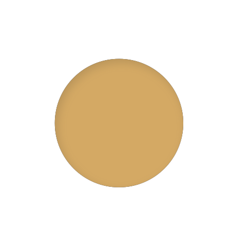
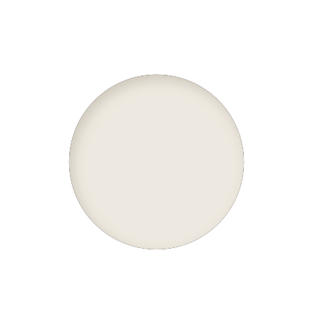
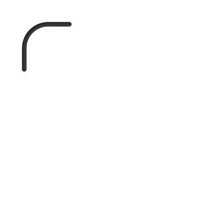
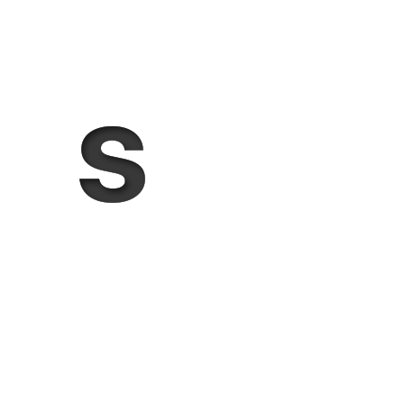
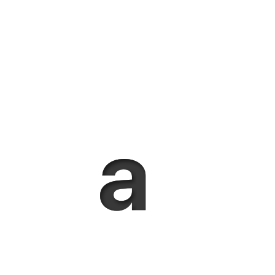

A new way to capture your moments.
A camera for the small but memorable moments.
You’re on the list
Thanks for joining. We’ll email you when snipcam opens up, and keep you posted along the way.
Inside snipcam
Capture in motion
Hold for two seconds. It drops into your stack.

Stack your snips
Each day becomes a stack.
Replay your stack
Open a day and it plays back to back.

Make your own stacks
Group snips by trip, person or season.
Doomscroll your snips
Your snips, shuffled into one scroll.

Make a collage
Arrange snips in rows or a grid.
Tell us what to build
Thank you!
We read every note. If you left your email, we may write back.